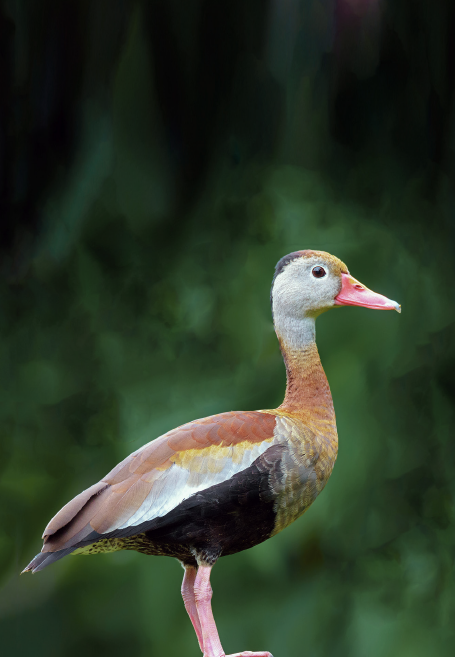

Identificación
Es un pato de aproximadamente 50 cm. Cabeza gris parda y marrón en la coronilla, ojos cafés rodeados de un anillo de plumas blanco, pico rosado brillante con la punta gris y patas rosa claro. El cuello es principalmente marrón rufo, más grisáceo en la parte pectoral, vientre negruzco, dorso y alas cafés con tonalidades blancas hacia el borde. En vuelo se ven las alas con borde negro, blanco hacia la parte media y café en la base.
Historia natural
Es rara en el Lago de Tota, llegando desde zonas más bajas y usando este sistema solo transitoriamente. En Colombia se tienen indicios de reproducción entre abril-agosto y diciembre-febrero, anidando principalmente en cavidades de árboles y en ocasiones en el suelo en coberturas de pastizales o debajo de arbustos, presentando nidadas de 12 a 16 huevos color crema que ambos padres incuban entre 26 a 31 días (22). Se alimenta principalmente de pastos y semillas, ocasionalmente de algunos invertebrados (22).
Fuente: Arias, Luis, et al. (2020). Guía de Aves del Lago de Tota. UPTC
Foto: Luis Fdo. Agudelo / Extraída de Guía de Aves del Lago de Tota.